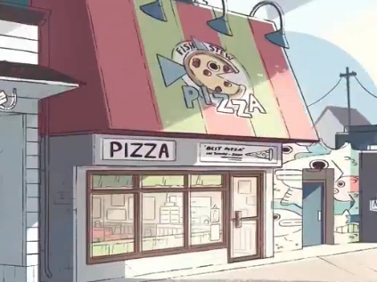

Welcome to Beach City — a small town with a big heart! Nestled along the
Delmarva coastline, our community is known for its friendly locals,
peaceful beaches, and one-of-a-kind charm. Whether you're visiting for
the first time or you've been coming here for years, we’re proud to
share our home with travelers, adventurers, and even a few magical
beings. At Beach City, everyone is welcome — because here, being
yourself is the best thing you can be.
Meet the Crystal Gems
No trip to Beach City is complete without a glimpse of the legendary
Crystal Gems! These mysterious and powerful guardians live in the
towering temple carved into the cliffside just past the beach. Known for
protecting our town from strange monsters and magical mayhem, the Gems
are a symbol of courage, unity, and cosmic wonder. Keep your eyes
open—you might just catch Garnet, Amethyst, Pearl, or Steven himself out
and about, saving the day or grabbing a snack at the Big Donut. They're
not just heroes… they’re part of what makes Beach City truly magical.
Fish Stew Pizza
Craving something delicious with a Beach City twist? Swing by Fish Stew
Pizza, the town’s favorite family-run pizzeria! Known for their unique
combos like the signature fish stew topping (trust us, it's better than
it sounds), this cozy spot is a go-to for locals and visitors alike.
Whether you’re grabbing a quick slice or settling in for a full meal,
you’ll be welcomed with friendly service and mouthwatering flavors.
Bonus: if you’re lucky, you might catch the Crystal Gems popping in for
a bite!

Keep Beach City Weird
From glow stick storms to giant woman sightings, Beach City is no
stranger to the strange—and we love it that way! Our town embraces the
weird, the wonderful, and the downright magical. Locals proudly
celebrate the unusual with open minds and open hearts. So don’t be
surprised if you stumble upon a sand sculpture contest judged by a
talking crab, or a mysterious warp pad glowing on the beach at night.
Around here, being different is part of the charm. Keep Beach City
weird—and keep it awesome!